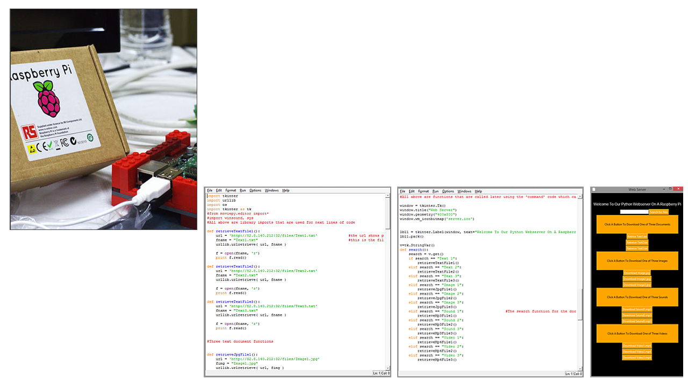

In this project we was put into groups of 2, we had been set the task to download
and retrive files that are on the raspberry pi to load onto the python client
such as a word or text document or sound to a video file. Coding this for
the project came with a few objects to overcome. To start with we had to first
install the rasberry pi with its operating system, and then install an apachi
server to allow the python client to connect to the raspberry pi. I then put
the files in to a certin file on the raspberry pi. It was then a case of writing
the code for the python server to tell it where to go by using variables and then
creating a Graphic User Interface (GUI) for the user to use.